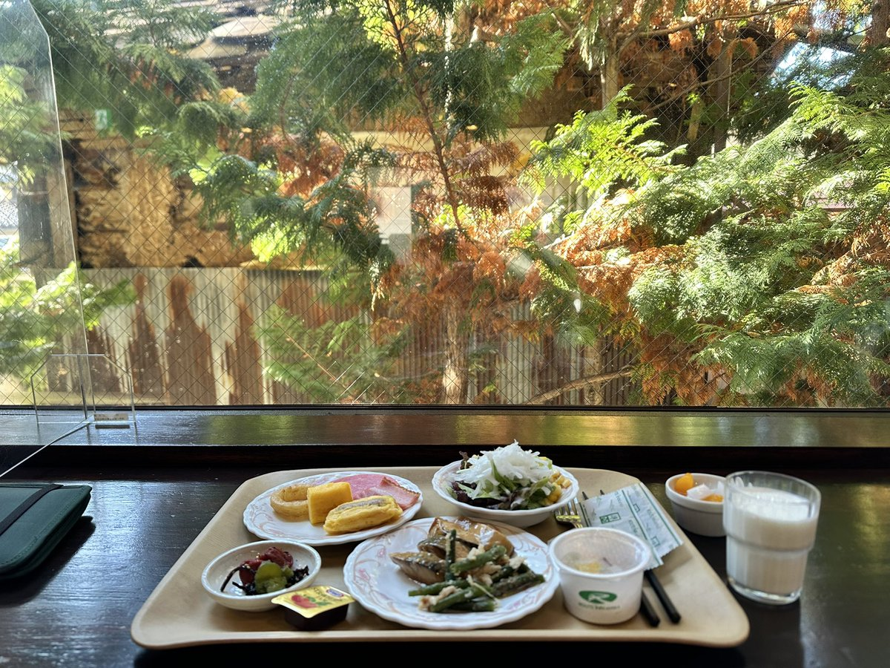

这家酒店在诹访湖边，大概应该建成30年以上了，设备有些老旧，尤其是热水系统，放出来的水居然是100度的开水，连金属水管都是滚烫的，我被烫了好几次。
好在酒店的服务很不错，服务人员也是比我父母还年长的人了，有老一代日本人的礼节，坐在大厅里喝茶，你一抬头她就会对你点头示意，有点不习惯。
客房内的设备很完善，虽然我不看电视机也不办公，床很好睡，浴室有个很爽的浴缸，且他们提供的洗浴用品挺好的。
早餐西式日式都有，但我早餐不吃米饭，就嗯造蔬菜和蛋白质了（日本蔬菜还是挺贵的，想多吃点）日式的纳豆 厚蛋烧 杏仁冻 鲭鱼都有，西式的沙拉 火腿 可颂 炸物也都有，还有海苔和本地的腌菜（梅子和昆布）
好在酒店的服务很不错，服务人员也是比我父母还年长的人了，有老一代日本人的礼节，坐在大厅里喝茶，你一抬头她就会对你点头示意，有点不习惯。
客房内的设备很完善，虽然我不看电视机也不办公，床很好睡，浴室有个很爽的浴缸，且他们提供的洗浴用品挺好的。
早餐西式日式都有，但我早餐不吃米饭，就嗯造蔬菜和蛋白质了（日本蔬菜还是挺贵的，想多吃点）日式的纳豆 厚蛋烧 杏仁冻 鲭鱼都有，西式的沙拉 火腿 可颂 炸物也都有，还有海苔和本地的腌菜（梅子和昆布）
